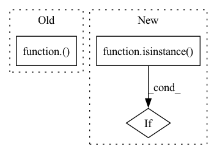

Pattern ID :17603
Before Change
def minimum(xx, yy, name=None):
return Lambda(lambda inputs: torch.minimum(inputs[0], inputs[1]), name=name)( [xx, yy])
def norm(inputs, ord="euclidean", axis=1, keepdims=False, name=None):
return Lambda(partial(torch.norm, p=2, dim=axis, keepdim=keepdims), name=name)(inputs)After Change
def minimum(xx, yy, name=None):
if isinstance( yy, torch.Tensor) :
func = lambda inputs: torch.minimum(inputs[0], inputs[1])
else: // maximum doesn"t support scalar value
func = lambda inputs: torch.where(inputs[0] > inputs[1], inputs[1], inputs[0])In pattern: SUPERPATTERN
Frequency: 4
Non-data size: 3
Instances Fragment ID: 58212847
Project Name: leondgarse/keras_cv_attention_models
Commit Name: d562ca7add8b907797fd0d69903f7eb0bbf2340c
Time: 2023-02-09
Author: leondgarse@gmail.com
File Name: keras_cv_attention_models/pytorch_backend/functional.py
M Class Name: AnonimousClass
N Class Name: AnonimousClass
M Method Name: minimum(3)
N Method Name: minimum(3)
M Parent Class:
N Parent Class:
M File Name: keras_cv_attention_models/pytorch_backend/functional.py
N File Name: keras_cv_attention_models/pytorch_backend/functional.py
M Start Line: 105
M End Line: 105
N Start Line: 112
N End Line: 116
Before Change
elif isinstance(value, container_abcs.Mapping):
return {_cast(k, dtype): _cast(v, dtype) for k, v in value.items()}
elif isinstance(value, container_abcs.Iterable):
return type(value)( _cast(v, dtype) for v in value)
else:
return value
After Change
return {_cast(k, dtype): _cast(v, dtype) for k, v in value.items()}
elif isinstance(value, container_abcs.Iterable):
iterable = map(lambda v: _cast(v, dtype), value)
if isinstance(value, list) or isinstance( value, tuple) :
return type(value)(iterable)
else:
return iterable Fragment ID: 58212850
Project Name: pytorch/pytorch
Commit Name: b3135c2056f33e918c5b0aeeb4098580c2818ddf
Time: 2020-09-29
Author: nshulga@fb.com
File Name: torch/cuda/amp/autocast_mode.py
M Class Name: AnonimousClass
N Class Name: AnonimousClass
M Method Name: _cast(2)
N Method Name: _cast(2)
M Parent Class:
N Parent Class:
M File Name: torch/cuda/amp/autocast_mode.py
N File Name: torch/cuda/amp/autocast_mode.py
M Start Line: 152
M End Line: 152
N Start Line: 152
N End Line: 157
Before Change
def reduce_sum(inputs, axis=None, keepdims=False, name=None):
return Lambda(partial(torch.sum, dim=axis, keepdim=keepdims), name=name)( inputs)
def relu(inputs, name=None):
return Lambda(F.relu, name=name)(inputs)After Change
def reduce_sum(inputs, axis=None, keepdims=False, name=None):
if isinstance( inputs, (list, tuple)) and axis == 0:
return Add(name=name)(inputs)
else:
return wrapper(partial(torch.sum, dim=axis, keepdim=keepdims), inputs, name=name) Fragment ID: 58212837
Project Name: leondgarse/keras_cv_attention_models
Commit Name: d562ca7add8b907797fd0d69903f7eb0bbf2340c
Time: 2023-02-09
Author: leondgarse@gmail.com
File Name: keras_cv_attention_models/pytorch_backend/functional.py
M Class Name: AnonimousClass
N Class Name: AnonimousClass
M Method Name: reduce_sum(4)
N Method Name: reduce_sum(4)
M Parent Class:
N Parent Class:
M File Name: keras_cv_attention_models/pytorch_backend/functional.py
N File Name: keras_cv_attention_models/pytorch_backend/functional.py
M Start Line: 140
M End Line: 140
N Start Line: 150
N End Line: 155
Before Change
def maximum(xx, yy, name=None):
return Lambda(lambda inputs: torch.maximum(inputs[0], inputs[1]), name=name)( [xx, yy])
def minimum(xx, yy, name=None):
return Lambda(lambda inputs: torch.minimum(inputs[0], inputs[1]), name=name)([xx, yy])After Change
def maximum(xx, yy, name=None):
if isinstance( yy, torch.Tensor) :
func = lambda inputs: torch.maximum(inputs[0], inputs[1])
else: // maximum doesn"t support scalar value
func = lambda inputs: torch.where(inputs[0] > inputs[1], inputs[0], inputs[1]) Fragment ID: 58212838
Project Name: leondgarse/keras_cv_attention_models
Commit Name: d562ca7add8b907797fd0d69903f7eb0bbf2340c
Time: 2023-02-09
Author: leondgarse@gmail.com
File Name: keras_cv_attention_models/pytorch_backend/functional.py
M Class Name: AnonimousClass
N Class Name: AnonimousClass
M Method Name: maximum(3)
N Method Name: maximum(3)
M Parent Class:
N Parent Class:
M File Name: keras_cv_attention_models/pytorch_backend/functional.py
N File Name: keras_cv_attention_models/pytorch_backend/functional.py
M Start Line: 101
M End Line: 101
N Start Line: 104
N End Line: 108